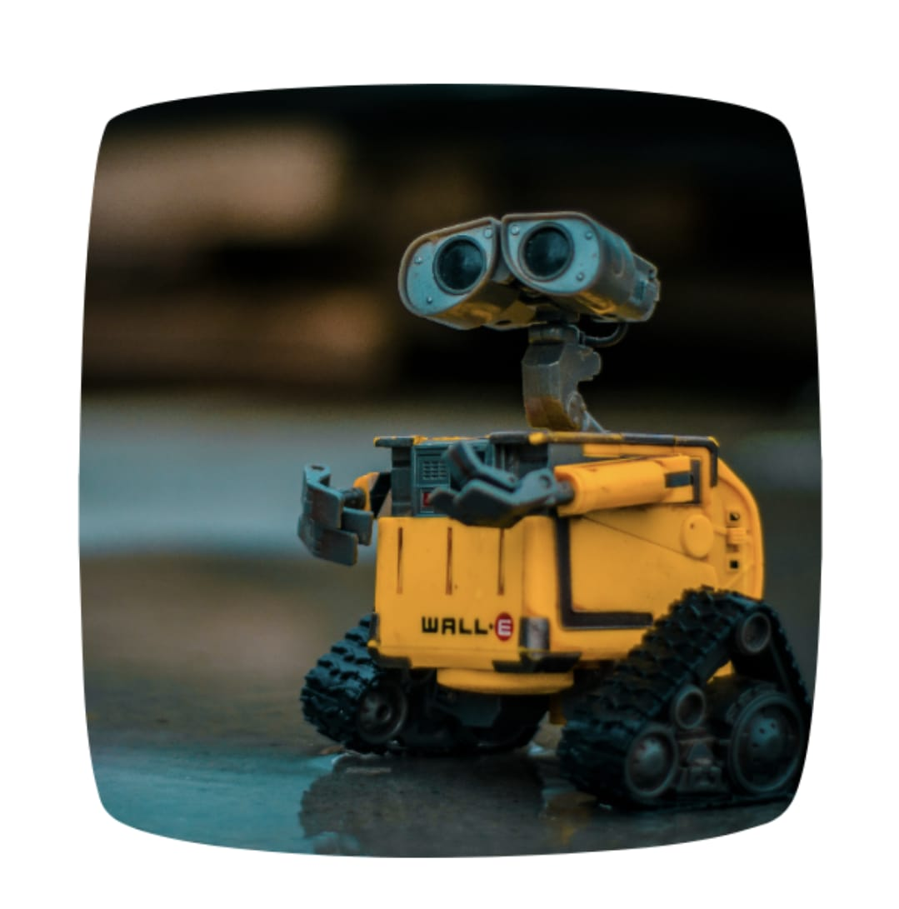
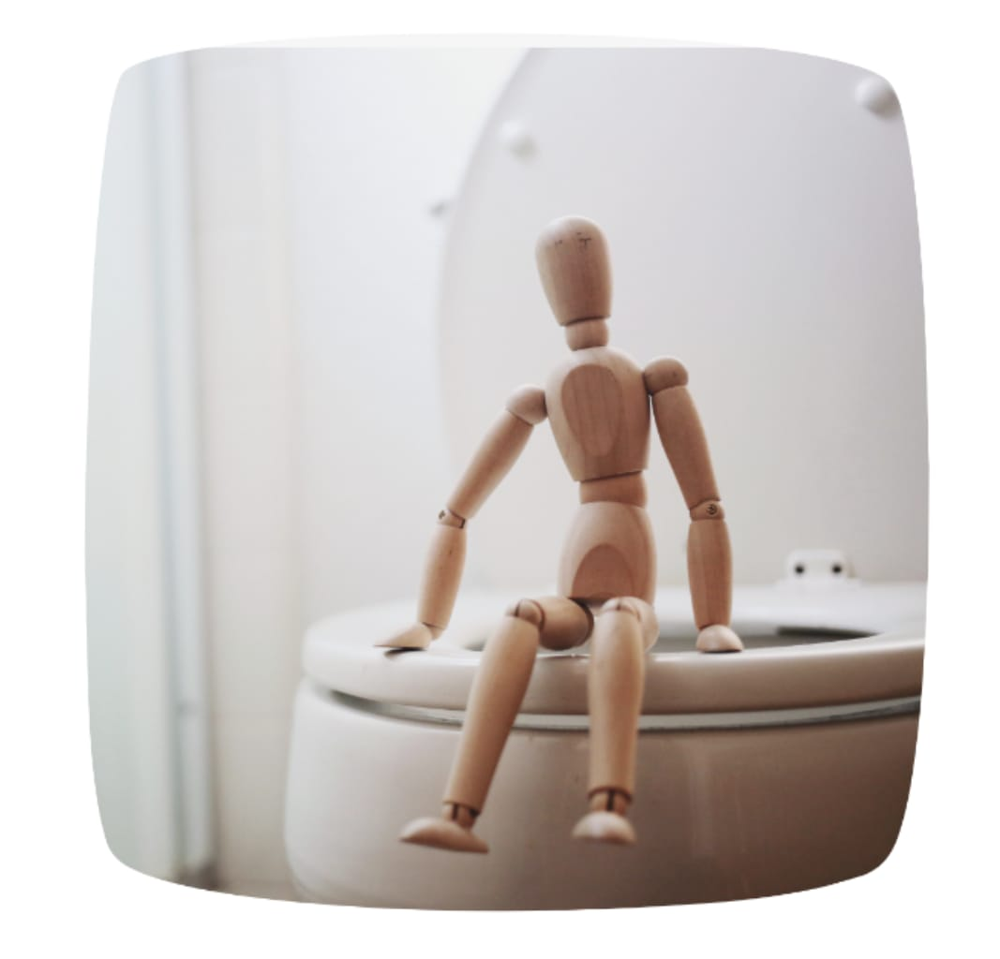
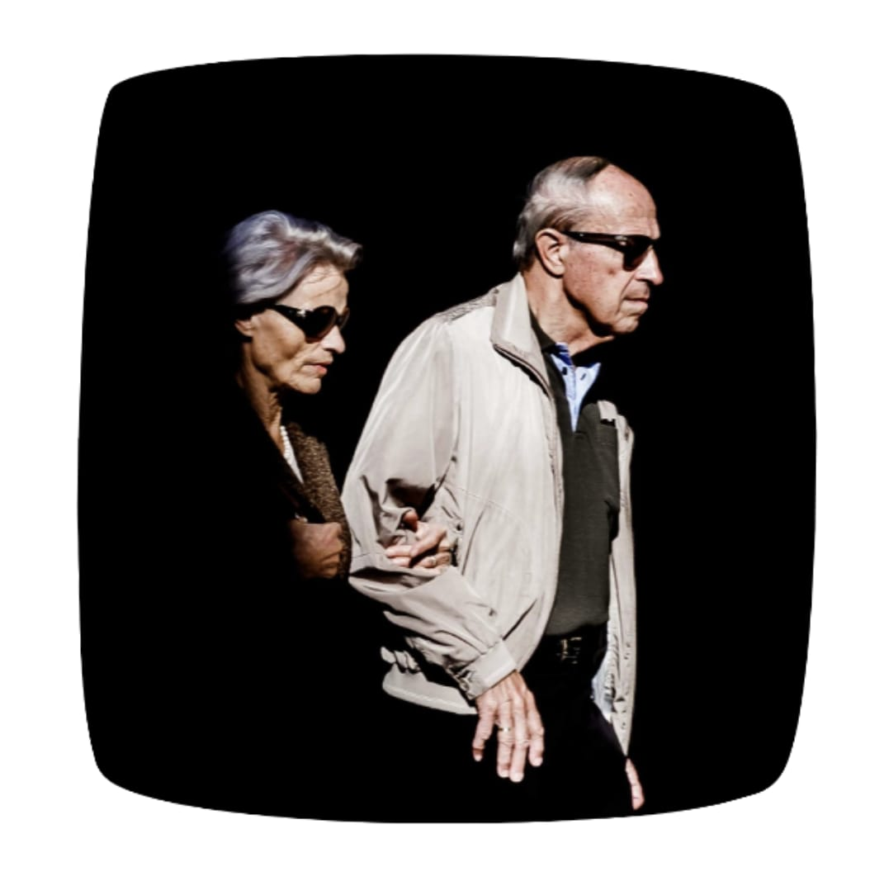

About Us
SPECTRUM ,Technical society of COLLEGE OF ENGINEERING AND TECHNOLOGY, BHUBANESWAR,a place for all technical enthusiasts to learn, discover and innovate new things in the field of Technology and Design. The name of the club " SPECTRUM ", a contribution of our alumni of 2015 batch, is particularly used to describe the characteristic colors of visible light after passing through a prism, similarly students of CET consist of different skills within them and Spectrum acts like a prism, Spectrum recognises their skills helps them to strengthen it. This club was established by " Bikram Keshari Panda (2015 batch) ".Spectrum got its recognition in the year 2016 and got its workspace, funding and other facilities. Primarily this was his idea to have an electronics society in our college but with the efforts of other members we established two other wings - Software and Design.The other seniors who had their valuable contribution for this initiative were: Ankit Mishra, Zighnesh Biswal, Abhishek Dash, Avinash Nayak, Tapan Kumar Pal, Krutikesh Sahoo, Abhilash Das.
Wings
.jpeg)
Hardware
.jpeg)
Software

Design
Projects
SUPPLY BOAT
Robots help to deliver food and medicine aid in flood scenarios to the affected people in remote areas. Semi finalist at IIT bombay, Eyantra competition 2019-20.
SMART TOILET FOR SENIOR CITIZENS AND PATIENTS
A semi automated toilet that is designed for the elderly people and the patients. This toilet helps them defecate and urinate with ease and reduces the filthy labour for the hospital authorities. The use of embedded microcontroller Arduino Mega 2560 makes the system smart.
BHAAVANA
device helps physically imapired people to understand the emotions of the person they are talking to
EXTRACTIVE-TEXT-SUMMARIZATION
A simple python program which can find the most important sentences in a paragraph and can give them as the output. Quite useful for the tasks of reading short summaries of news articles and such. Unlike machine learning models, this doesn't train but rather uses a graph based approach to rank the sentences based on their cosine similarities and give the desired output as a result.
Adding Creativity to the Nation...